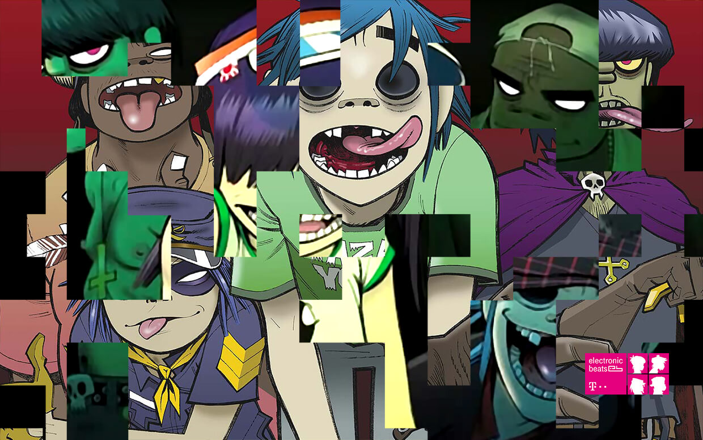

Demon Days, 2005
Gorillaz are a British virtual band formed in 1998 by Damon Albarn of Blur, and Jamie Hewlett, co-creator of the comic book Tank Girl. They had the idea to create the band while watching MTV in their London flat and originally intended to call the project Gorilla.
The band consists of four fictional band members: 2-D (vocals, keyboard), Murdoc Niccals (bass), Noodle (guitar, vocals), and Russel Hobbs (drums). These characters only appear in animated form and are not alter-egos of real people, as is often mistakenly assumed. There is an extensive fictional back-story behind these band members, written by Albarn and Hewlett. Their albums, several of their music videos, and their autobiographical book Rise Of The Ogre all tell the saga. Damon Albarn is the only permanent musical contributor to the band, which is also a collaboration between various musicians. Their style is broad with a large number of alternative influences including rock, hip-hop, and electronica.

At the end of 2001 the band released another single, 911, which was a collaboration between Gorillaz and rap artists D12, Eminem and Terry Hall. The single was from the soundtrack to the 2002 action comedy Bad Company.
Their second studio album, Demon Days, was released on 11 May 2005 and included the hit singles Feel Good Inc., DARE, Dirty Harry and Kids With Guns / El Mañana. Demon Days went five times platinum in the UK, double platinum in the United States, and earned five Grammy award nominations for 2006 and won one of them (Best Pop Collaboration with Vocals). Collaborators on this album (produced by Dj Danger Mouse) include De La Soul, Bootie Brown of The Pharcyde, Shaun Ryder of Happy Mondays, Neneh Cherry, Ike Turner, MF Doom, and Roots Manuva, amongst others.
In late 2007, Albarn and Hewlett began working on Carousel, a new Gorillaz project which eventually evolved into the band's third studio album, Plastic Beach, which was released 9 March 2010. Albarn said, "I'm making this one the most pop record I've ever made in many ways, but with all my experience to try and at least present something that has got depth.” The album features guest performances by Snoop Dogg, Lou Reed, Mos Def, Bobby Womack, Gruff Rhys, Mark E. Smith, Mick Jones, Paul Simonon, Kano, Bashy, De La Soul, Little Dragon, Hypnotic Brass Ensemble, sinfonia ViVA, and The Lebanese National Orchestra for Oriental Arabic Music.
A 3D projection of the group was shown at the 2005 MTV Music Awards and the 2006 Grammys. They also performed at the Brits, in a different format, using screens rather than projections. Gorillaz have performed live in other occasions as well: in 2001 & 2002 they did tours where the musicians played behind screens, and in 2005 & 2006, Gorillaz had five nights in Manchester and New York respectively. This time the screens were behind the musicians, who were visible to the audience only as silhouettes (except for the guest-stars).
Since the band began to achieve mainstream success, there have been rumours of them working on a full-length movie. Some of these have been confirmed, but nothing has gotten beyond planning stages, mainly due to conflicts between the band and studios involved. In 2008, Hewlett said "Ultimately we didn't think that feel we're in a position to make the kind of movie we want to make with Gorillaz at the moment. [...] But I'd still like to make a full, lavishly-animated Gorillaz movie someday."
Albarn and Hewlett created a Pop Opera called Monkey: Journey to the West, which premiered in the summer of 2007 at the Manchester International Festival. A soundtrack album was recorded in the summer as well (initially only digitally available though a CD version was released in 2008). The production went on to show at the Théâtre du Châtelet in Paris in September-October 2007, the Spoleto Festival in Charleston, SC, USA in May 2008, and the Royal Opera House in London in July 2008.
The duo behind the Pop Opera built on ideas from Monkey: Journey to the West to release a short film in the Summer of 2008 which accompanied the United Kingdom's coverage of the BBC Olympic Coverage in Beijing. It featured a basic outline of the main plot elements of the Opera, reworked into a "Journey to the East", with the characters finishing in the Beijing Olympic Stadium.
Gorillaz headlined the Pyramid Stage at Glastonbury 2010, as an immediate replacement for U2, who dropped out of performing at the festival.
At the end of 2010 Gorillaz released their next album The Fall made in the hotel rooms during their US tour. It is the first album made entirely on iPad. The album is streamed on the Gorillaz website and was available for free download for a limited time.
In April 2012, Albarn told The Guardian that he and Hewlett had fallen out and that future Gorillaz projects were "unlikely".
Gorillaz's current live band's lineup includes
Damon Albarn - Vocals, keyboards, guitar, bass guitar
Jamie Hewlett - Illustration, visuals, FX
Mike Smith
Mick Jones - guitar
Paul Simonon - bass
Cass Browne - Drums, percussion